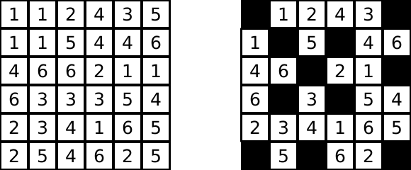

Hitori is logic puzzle with goal to black out some cells such that
ASP (Answer Set Programming) is declarative approach to problem solving. Idea is to give description of problem you are solving instead of giving algorithm (how to solve). ASP system will take that description and figure out solution using approach similar SAT solvers.
There are four kinds of ASP declarations we will be using.
Facts - These are statements of form square(16),
color(apple, red) for example. They represent ground facts
which we know are true - 16 is a square, color of apple is red.
Rules allow us to derive more facts and are of form
A :- B, C, D. prime(N) :- not composite(N),
grandparent(A, C) :- parent(A, B), parent(B, C) are
examples of rule. First rule allows us to derive 17 is
prime if we know that 17 is not composite. Second rule
encodes that if A is parent of B and
B is parent of C then A is
grandparent of C. If parent(joe, smith) and
parent(smith, ricky) then it allow us to derive
grandparent(joe, ricky).
Using constraints, we can reject some solutions - we are not
interested in. Constraints are of form :- B, C, D.
Semantics of constraints in ASP is it will reject solutions where all of
B, C, D are true. For example
:- prime(N), even(N) will ignore even primes from
solution.
Finally directives are statements starting with #. They
allow constants to be declared using #const n = 4, output
to be controlled using #show prime/1.
First step to solve Hitori is declaring no number appears twice in row or column in solution.
1 { blacked(X, Y1); blacked(X, Y2) } 2 :- written(X, Y1, N), written(X, Y2, N), Y1 < Y2.
1 { blacked(X1, Y); blacked(X2, Y) } 2 :- written(X1, Y, N), written(X2, Y, N), X1 < X2.Body part (part after :-) is enabled when same number is
written in same row (first rule) / same column (second rule) twice. Head
part (part before :-) states that one of occurrence should
be blacked out or both. This is achieved using choice rule. Choice rule
is of form { A; B; C } which states that solver has choice
to include any subset of this set as derived fact. If choice rule
contains numbers before and after set then size of subset should be
greater or equal to before number and less than or equal to after
number. { A; B; C } = N means
N { A; B; C } N.
Blacked out cells are not neighbors can be expressed using following constraints.
:- blacked(X, Y), blacked(X + 1, Y).
:- blacked(X, Y), blacked(X, Y + 1).Finally to guarantee non blacked out cells are part of single
connected component, we select one of non blacked out cell and start
doing breadth first search - adding discovered cells in
reachable relation. All non blacked out cells should be
reachable.
{ start(X, Y) : written(X, Y, _), not blacked(X, Y) } = 1.
reachable(X, Y) :- start(X, Y).
reachable(X + 1, Y) :- reachable(X, Y), written(X + 1, Y, _), not blacked(X + 1, Y).
reachable(X, Y + 1) :- reachable(X, Y), written(X, Y + 1, _), not blacked(X, Y + 1).
reachable(X - 1, Y) :- reachable(X, Y), written(X - 1, Y, _), not blacked(X - 1, Y).
reachable(X, Y - 1) :- reachable(X, Y), written(X, Y - 1, _), not blacked(X, Y - 1).
:- written(X, Y, _), not blacked(X, Y), not reachable(X, Y).Finally we add #show blacked/2 to display blacked cells.
Let’s now try out our encoding on instance of Hitori which is shown
below. 
Running below program using clingo outputs which cells need
to colored black (shown above). written(X, Y, N) relation
means there is number N written at row X and
column Y.
written(1, 1, 1). written(1, 2, 1). written(1, 3, 2).
written(1, 4, 4). written(1, 5, 3). written(1, 6, 5).
written(2, 1, 1). written(2, 2, 1). written(2, 3, 5).
written(2, 4, 4). written(2, 5, 4). written(2, 6, 6).
written(3, 1, 4). written(3, 2, 6). written(3, 3, 6).
written(3, 4, 2). written(3, 5, 1). written(3, 6, 1).
written(4, 1, 6). written(4, 2, 3). written(4, 3, 3).
written(4, 4, 3). written(4, 5, 5). written(4, 6, 4).
written(5, 1, 2). written(5, 2, 3). written(5, 3, 4).
written(5, 4, 1). written(5, 5, 6). written(5, 6, 5).
written(6, 1, 2). written(6, 2, 5). written(6, 3, 4).
written(6, 4, 6). written(6, 5, 2). written(6, 6, 5).
1 { blacked(X, Y1); blacked(X, Y2) } 2 :- written(X, Y1, N), written(X, Y2, N), Y1 < Y2.
1 { blacked(X1, Y); blacked(X2, Y) } 2 :- written(X1, Y, N), written(X2, Y, N), X1 < X2.
:- blacked(X, Y), blacked(X + 1, Y).
:- blacked(X, Y), blacked(X, Y + 1).
{ start(X, Y) : written(X, Y, _), not blacked(X, Y) } = 1.
reachable(X, Y) :- start(X, Y).
reachable(X + 1, Y) :- reachable(X, Y), written(X + 1, Y, _), not blacked(X + 1, Y).
reachable(X, Y + 1) :- reachable(X, Y), written(X, Y + 1, _), not blacked(X, Y + 1).
reachable(X - 1, Y) :- reachable(X, Y), written(X - 1, Y, _), not blacked(X - 1, Y).
reachable(X, Y - 1) :- reachable(X, Y), written(X, Y - 1, _), not blacked(X, Y - 1).
:- written(X, Y, _), not blacked(X, Y), not reachable(X, Y).
#show blacked/2.